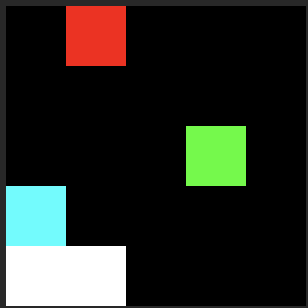

This is a python command line application for manipulating images by applying audio effects to them.
The idea was inspired by some initial approaches I tried using Audacity, which while fun is quite a tedious process and prone to errors.
Since the approach is completely non-visual anyway I figured that writing some simple code to handle the transformations wouldn't go against the spirit of the endeavour.
The project is based around pysox which is itself a wrapper around the SoX tool.
Note: I am far from the first to try this idea out. Two resources I used for inspiration & reference are:
The most direct way to try this out is to use this webapp
A very early version can be downloaded here.
Note 1: this has only been tested on macOS at this stage - so may not work on Windows / Linux (but maybe it will!)
Note 2: I don't have a personal Apple developer account and so, unfortunately, the zip is not signed / notarised. This means
All of the dependencies are bundled into the application - so there's no need to install any extra software
At this stage the usage is fairly simple, but requires using a terminal / console application
The reason this works is due to the way a computer interprets media such as audio & images. Though we have dedicated audio software to handle reading & playback of sounds, image software for displaying & editing images, video software... etc, these are really just specific ways of interpreting the data or information contained in a media file. Of course different encodings exist, various compression algorithms etc which complicate this view somewhat - but essentially the computer is just acting on binary streams of 0s and 1s without really seeing the forest for the trees.
One of the keys to applying this kind of audio effect treatment to images is the ability of SoX to load in data in a raw format. Formats like WAV,
FLAC, MP3 etc are "self-describing", in that they contain a header file which describes aspects of the audio data such as sample-rate, number of
channels, length, encoding etc. In this case because all of the pertinent details are contained in the header, SoX can figure out how to interpret the data
itself.
Raw formats don't contain such a header and therefore in order to interpret the data as expected this information must
be explicitly provided to SoX. This allows us to manipulate SoX to our own ends. We specify the data encoding to be a-law
(though I can't claim to know why this particular encoding works while others don't...) which expects each sample to be 8-bit (this will be important later).
It then becomes quite simple to input an image to sox on the command line and have it output that same image:
sox -t al -c 1 -r 48k path/to/image.bmp -t al path/to/output.bmp
This is obviously a totally pointless example as it just outputs a 1:1 copy of the same image (in fact even this isn't really true - I do spot some
artefacts appearing) but it shows that by specifying -t al flag, which sets the filetype to be a-law, we can pass through image data.
We've told SoX that we're working with raw data - but that isn't actually true, its just a nice hack. We're working with bitmap files which actually do
have a header. Using that header we can figure out where the data portion actually begins and only perform our operations from that point in the data
(i.e. removing the header, performing our transformations & then finally reattaching the header to the modified block of data) this avoids corrupting the header.
So, now we're ready to look into what SoX actually does to our data to achieve these effects. Its useful to briefly look into what happens to audio data first
to get a feel for what we can expect to see. The simplest and clearest demonstration is probably the delay effect:
delay {position(=)}: Delay one or more audio channels such that they start at the given position.
This has the effect of offsetting all of the data samples by a given number of seconds. The resulting output contains only the delayed samples,
i.e. its 100% wet, it doesn't include any of the dry original samples
sox tiny_rave_SH101_C4.wav tiny_rave_SH101_C4_out.wav delay 1.0
[ 0.00000000e+00 -2.05039978e-05 -9.76562500e-04 -4.47976589e-03
-9.54377652e-03 -1.52943134e-02 -2.14105845e-02 -2.78952122e-02
-3.46711874e-02 -4.15842533e-02 -4.85666991e-02 -5.54741621e-02
-6.22984171e-02 -6.83031082e-02 -7.33066798e-02 -7.80060292e-02
-8.25167895e-02 -8.67084265e-02 -9.07150507e-02 -9.43706036e-02
-9.76780653e-02 -1.00758076e-01 -1.03464842e-01 -1.05913758e-01
-1.07764721e-01 -1.09514713e-01 -1.10503912e-01 -1.11728311e-01
-1.11741304e-01 -1.12472177e-01 -1.10652328e-01 -1.13386512e-01
-7.16021061e-02 1.30800843e-01 2.30443716e-01 2.74714947e-01
3.09366226e-01 3.36177826e-01 3.61080170e-01 3.82261157e-01
4.03543711e-01 4.21683312e-01 4.40880895e-01 4.54923272e-01
4.70372915e-01 4.83487487e-01 4.98167157e-01 5.10751724e-01
5.24211765e-01 5.37293554e-01]
Clearly showing audio amplitude data as we would expect.
[0. 0. 0. 0. 0. 0. 0. 0. 0. 0. 0. 0. 0. 0. 0. 0. 0. 0. 0. 0. 0. 0. 0. 0.
0. 0. 0. 0. 0. 0. 0. 0. 0. 0. 0. 0. 0. 0. 0. 0. 0. 0. 0. 0. 0. 0. 0. 0.
0. 0.]
Once again this is what we expect to see considering we've shifted all of the samples by 1 second. In order to find the data in the array
we have to index from the sample equivalent of 1.0s, which with our 44100 Hz sample rate is actually just sample 44100 (sample = time * sampling-rate),
yielding:
[ 0.00000000e+00 -2.05039978e-05 -9.76562500e-04 -4.47976589e-03
-9.54377652e-03 -1.52943134e-02 -2.14105845e-02 -2.78952122e-02
-3.46711874e-02 -4.15842533e-02 -4.85666991e-02 -5.54741621e-02
-6.22984171e-02 -6.83031082e-02 -7.33066798e-02 -7.80060292e-02
-8.25167895e-02 -8.67084265e-02 -9.07150507e-02 -9.43706036e-02
-9.76780653e-02 -1.00758076e-01 -1.03464842e-01 -1.05913758e-01
-1.07764721e-01 -1.09514713e-01 -1.10503912e-01 -1.11728311e-01
-1.11741304e-01 -1.12472177e-01 -1.10652328e-01 -1.13386512e-01
-7.16021061e-02 1.30800843e-01 2.30443716e-01 2.74714947e-01
3.09366226e-01 3.36177826e-01 3.61080170e-01 3.82261157e-01
4.03543711e-01 4.21683312e-01 4.40880895e-01 4.54923272e-01
4.70372915e-01 4.83487487e-01 4.98167157e-01 5.10751724e-01
5.24211765e-01 5.37293554e-01]
which is exactly the same amplitude data as we saw at the beginning of the original file.The first thing to do is to get a small & simple bitmap file to work with in order to clearly see what is going on. This won't necessarily give us an interesting image to look at, but it will help uncover some of the mystery (I hope!). For this I've copied the bitmap data from this blog by Uday Hiwarale. Well worth a read if you want to understand more about the bitmap format.
This is the bitmap data we're going to be dealing with:
42 4D
00 00 00 00
00 00
00 00
36 00 00 00
28 00 00 00
05 00 00 00
05 00 00 00
01 00
18 00
00 00 00 00
00 00 00 00
00 00 00 00
00 00 00 00
00 00 00 00
00 00 00 00
FF FF FF 00 00 00 00 00 00 00 00 00 00 FF FF 00
00 00 00 00 00 00 00 00 00 00 00 00 00 00 00 00
00 00 00 00 00 00 00 FF 00 00 00 00 00 00 00 00
00 00 00 00 00 00 00 00 00 00 00 00 00 00 00 00
00 00 FF 00 00 00 00 00 00 00 00 00 FF 00 00 00
If you copy and paste that into an application like hexfiend (for macOS) and save the file wih a bitmap extension
you should be able to view the (tiny! so zoom in a lot) image we've created:
Now if we take that image as our input and run the following in the python command line for SoxMosh:
./soxmosh_cli test.bmp test_output.bmp delay.json --sample-rate=60
Where delay.json is a file simply containing:
{
"effects":
[
{"delay": {"positions":[0.05]}}
]
}
We obtain as output:

And the corresponding hex data:
42 4D
00 00 00 00
00 00
00 00
36 00 00 00
28 00 00 00
05 00 00 00
05 00 00 00
01 00
18 00
00 00 00 00
00 00 00 00
00 00 00 00
00 00 00 00
00 00 00 00
FF FF FF FF FF FF 00 00 00 00 00 00 00 00 00 00
FF FF 00 00 00 00 00 00 00 00 00 00 00 00 00 00
00 00 00 00 00 00 00 00 00 00 FF 00 00 00 00 00
00 00 00 00 00 00 00 00 00 00 00 00 00 00 00 00
00 00 00 00 00 FF 00 00 00 00 00 00 00 00 00 FF
00 00 00
This isn't exactly what we expect to see based on our previous analysis of how the delay deals with samples - some of these
discrepencies I can explain, some I can't.
The bottom left white pixel was correctly shifted to the right - but it also left behind a white pixel, not a black one as would be expected.
Here we can see the issue with our white pixels, instead of simply shifting FF FF FF 00 00 00 -> 00 00 00 FF FF FF as we would expect,
we see FF FF FF 00 00 00 -> FF FF FF FF FF FF. I.e.it has simply created a new white pixel for us!
In addition the file size has increased from 134 bytes to 137